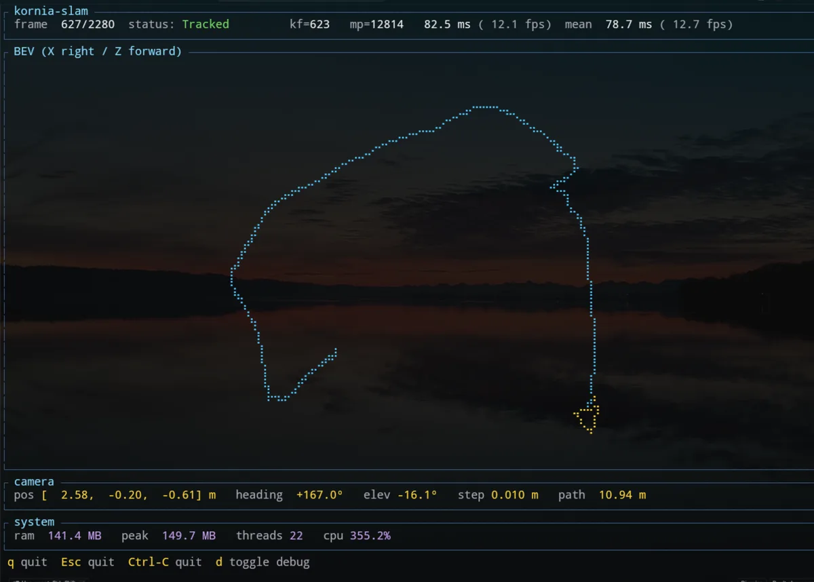
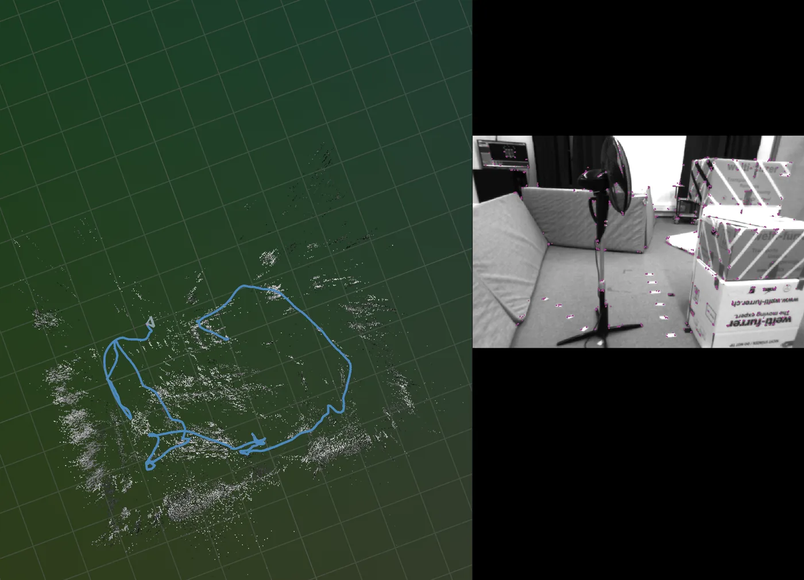

Tracking
Monocular, stereo and visual-inertial ORB tracking. KLT optical flow carries map points from frame to frame, and robust PnP estimates the pose.
kornia-slam · v0.1 · early release
Camera pose and a map of the space around it, from a single camera, a stereo pair or a camera with an IMU. Built on kornia-rs, with no C++ SLAM backend underneath.
git clone https://github.com/kornia/kornia-slamSee it run


What it does
Monocular, stereo and visual-inertial ORB tracking. KLT optical flow carries map points from frame to frame, and robust PnP estimates the pose.
Keyframes, map points and local bundle adjustment. It runs on its own thread by default, or in step with tracking.
IMU preintegration, inertial initialisation with gyro-bias estimation, and a visual-inertial BA with robust kernels on every residual.
DBoW2 place recognition finds candidate loops. Verified loops correct the live map through pose-graph optimisation. Needs a metric map from stereo or an IMU.
EuRoC and Hilti-Trimble datasets, MCAP recordings from Bubbaloop, a live OAK-D, and any UVC webcam.
Aligns the trajectory to ground truth and reports ATE, RPE and drift, with the raw and aligned trajectories saved as CSV.
How it is built
The kornia-slam crate owns the runtime. The app only connects a source to it and sends the results to the outputs, so the same pipeline runs on a dataset, a recording or a live camera.
unsafe blocks.SlamSystem into swappable subsystems is on the roadmap.Quick start
Download a EuRoC MAV sequence in ASL format (Machine Hall MH_01 is a good first run), then:
# monocular
cargo run --release -p kornia-slam-app -- euroc --data /path/to/MH_01_easy
# stereo + IMU, evaluated against ground truth
cargo run --release -p kornia-slam-app -- euroc --data /path/to/MH_01_easy --stereo --imu --evaluate| Source | Command | Mono | Stereo | IMU | Evaluation |
|---|---|---|---|---|---|
| EuRoC MAV | euroc | yes | yes | yes | yes |
| Hilti-Trimble 2026 | hilti | yes, fisheye | – | yes | yes |
| MCAP (Bubbaloop) | mcap | yes | with --calib | – | – |
| OAK-D, live | oakd | yes | with --calib | – | – |
| UVC webcam, live | uvc | yes | – | – | – |
oakd and uvc are behind the oakd and uvc cargo features. The default build needs no extra system dependencies. Add --rerun-stream for the 3D viewer, or --vocab ORBvoc.txt --apply-pgo to turn on loop closure. Every flag is in the app README.
Where it stands
v0.1 is an early release, and the API will change between minor versions. We publish accuracy and timing numbers only after measuring them against a fixed benchmark protocol, so this page does not show any yet.
SlamSystem runtime that owns the orchestrationRoadmap
The roadmap sets a direction, not a commitment. The full version is in ROADMAP.md.
GPU acceleration of the per-frame hot paths, starting with a KLT frontend. Relocalization that holds up across day, night and lighting changes. Metric scale for monocular maps through Sim(3) loop closure and AprilTag anchoring. Matching ORB-SLAM3 on accuracy and robustness.
Pluggable features such as XFeat, and pluggable place recognition with learned descriptors such as DINOv3. Multi-camera rigs. Atlas, a factor-graph foundation for BA and pose-graph optimisation. SlamSystem split into its subsystems.
Pixi environments for reproducible cross-platform builds, and ROS 2 through ros2_rust.
RGB-D, LiDAR and GNSS estimators; dense, TSDF, voxel and Gaussian-splat maps; a map server over MCP; agents that watch the subsystems at runtime and tune them.
Recent changes
Issues, design discussion and review all happen in the open on GitHub. Ask in Discord before starting a large change.